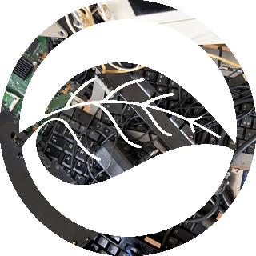

Inaugurado em dezembro de 2009, o Cedir tem como objetivo principal ser uma referência no descarte correto para materiais eletrônicos, principalmente os de informática, e foi elaborado em parceria com dois programas do Massachussetts Institute of Technology (MIT), além de seguir as diretrizes mundiais de sustentabilidade definidas pela ONU no World Summit de 2005.
O CEDIR foi implantado pelo CCE – Centro de Computação Eletrônica da USP e está instalado em um galpão de 400m² com acesso para carga e descarga de resíduos, área com depósito para categorização, triagem e destinação de 500 a 1000 equipamentos por mês.
Este Centro visa executar práticas de reuso, descarte e reciclagem de lixo eletrônico, que incluem bens de informática e telecomunicações que ficam obsoletos no próprio CCE como nas escolas, faculdades e institutos dos diversos campi da Universidade de São Paulo.
O plano piloto do projeto CEDIR aconteceu em junho de 2008 no CCE, entre os próprios funcionários da unidade com o nome de “Operação Descarte Legal". O resultado desta operação foi a coleta aproximada de 5,2 toneladas de peças e equipamentos de informática obsoletos. Esta experiência foi fundamental para a projeção do volume de lixo eletrônico existente na USP.
O Centro de Descarte e Reuso de Lixo Eletrônico (CEDIR) deve operar seguindo as seguintes etapas: Coleta e triagem; Categorização e Reciclagem.

Doações
Para fazer a doação, basta levar os equipamentos eletrônicos que você quer descartar até o Cedir. Depois de recebido, o material vai para a primeira etapa, a de coleta e triagem. É aí que a equipe de técnicos avalia se o equipamento ainda pode ser reutilizado.
Contatos e endereços
Telefones:
(11) 3091-8237/8238
E-mail:
cedir@usp.br
Endereço:
Av. Professor Lúcio Martins Rodrigues, Travessa 4, n° 399 - Cidade Universitária